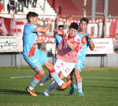

Un Los Andes desdibujado perdió contra Arsenal
El milrayitas perdió 3-1 contra Arsenal de Sarandí en el Estadio Eduardo Gallardón por la 19° fecha de la B Nacional. Axel Batista e Ignacio Sabatini por duplicado convirtieron los goles de la visita mientras que Enzo Diaz hizo el descuento para el conjunto de Leandro Lemos.
Ambos equipos se habían enfrentado anteriormente en el Estadio Julio Humberto Grondona por la fecha 2 de la B Nacional, en la etapa que también se conoce como “primera vuelta”. En esta oportunidad, el partido terminó en empate 1-1 con los goles de Manuel López Scaglia (ARS) y Gastón Gerzel (LOS).
En el historial previo al partido, disputaron 53 partidos totales entre sí, de los cuales 9 ganó Arsenal, 21 fueron empates y 23 veces Los Andes se llevó el triunfo. Además, en el Gallardón, ambos compilados disputaron 13 encuentros de los cuales hubo 7 victorias del local, 6 empates y una victoria para el conjunto de Avellaneda.
En lo que respecta al partido, el arranque lo tuvo a Arsenal como protagonista, presionando alto en campo rival y aprovechando los despistes de la defensa milrayitas. Así llegó el primero de la tarde, una recuperación en la mitad de cancha por parte de Andrés Ayala quien puso el pase entre medio de Nazareno Fernandez Colombo y Roman Riquelme, pase aprovechado por Ignacio Sabatini. El delantero disparó pero fue tapado por el arquero del conjunto local. Aún así, el despeje quedó para la llegada de Axel Batista quien marcó su primer gol en su estreno como jugador del Arse a los 12 minutos del primer tiempo.
A partir del primer gol, se lo vió al equipo de Franco propositivo y dispuesto a seguir aprovechando las desconcentraciones de Los Andes. 12 minutos después del primer gol, un centro de Matías Vera cae sobre el área de Rivasseau, quien no pudo sostener la pelota y dió rebote. Esta situación la aprovechó muy bien Sabatini para marcar el 0-2 parcial.
A los 29 minutos, pasados 5 minutos del segundo tanto, otra intervención de Vera por el costado derecho del campo habilitó a Nacho Sabatini que, ante la pobre marca de los centrales del conjunto de Lomas de Zamora, pisó el área y definió al palo izquierdo del guardameta milrayita, convirtiendo el tercer y último gol del VIaducto.
El primer tramo del cotejo terminó 3-0 con un Los Andes que necesitaba cambiar la cara frente a su gente. Con esto en mente, salieron a la segunda mitad con la intención de revertir la situación.
Por esto, al minuto 30 Los Andes tuvo un tiro libre, el encargado de ejecutarlo fue Matías Gomez. El centro partió muy pasado y, tras una mala salida de Porteau, Enzo Díaz puso el descuento para el compilado de Leonardo Lemos.
Luego del festejo de gol, a los 80 minutos de juego, el equipo local se quedó con uno menos tras la expulsión de Brian Leizza. Pese a esto, la visita no logró aprovechar el hombre de más y el encuentro terminó 1-3. Un resultado que le da aire a Arsenal de cara a las posiciones de descenso en la zona A.
Con respecto a su equipo, Dario Franco en conferencia de prensa dijo: “lo del segundo tiempo fue más parecido al partido contra All Boys, así que no fue tan bueno pero lo hecho en el primer tiempo nos deja muy contento y cercano a la perfección” y destacó que espera que este triunfo le dé un envión anímico a su equipo para el próximo partido.
A raíz de este desenlace, Los Andes, que enfrentará a Güemes de visitante en la siguiente fecha, se encuentra 10° con 24 puntos mientras que Arsenal, que jugará contra Colegiales en Sarandí en un partido clave para la zona baja, yace último con 15 puntos, a 4 de la salvación.